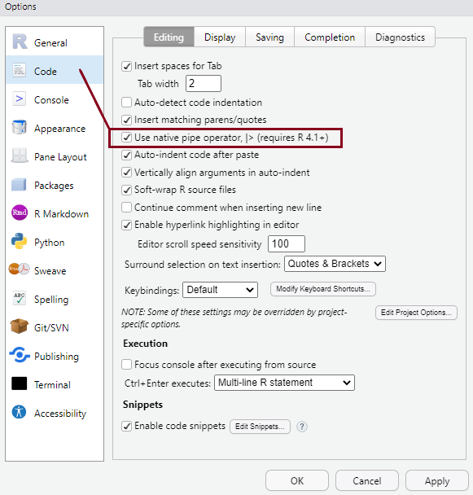

Code
dim(mtcars)[1] 32 11Code
nrow(mtcars)[1] 32Code
ncol(mtcars)[1] 11By the end of the session, you will:
R languageThis lab is an introduction to R and RStudio for the purposes of this module. Those new to R should also complete the R for Social Scientists online training course on their own (estimated to take around 5-6 hours), as well as read through the assigned chapters from the R4DS textbook.
To install R and RStudio on your personal computers, follow the steps outlined here based on your operating system.
Although you will only interact directly with RStudio in this module, R needs to be installed first.
Think of the relationship between the two as that between the engine of a car (R) and the dashboard of a car (RStudio):

Or perhaps imagine driving the car on the left vs. the one on the right:
The RStudio interface consists of four main panes (which can be customised to some degree):

The R Console Pane
The R Console, by default the left or lower-left pane in R Studio, is the home of the R “engine”. This is where the commands are actually run and non-graphic outputs and error/warning messages appear. The Console is the direct interface to the R software itself; it’s what we get if instead of RStudio we open the R software: a direct interface to the R programming language, where we can type commands and where results/messages are printed.
You can directly enter and run commands in the R Console, but realize that these commands are not saved as they are when running commands from a script. For this reason, we should not use the Console pane directly too much, ad reserve it only for quick and dirty calculations and checks. For typing commands that we want R to execute, we should instead use an R script file, where everything we type can be saved for later and complex analyses can be built up.
The Source Pane
This pane, by default in the upper-left, is a space to work with scripts and other text files. This pane is also where datasets (data frames) open up for viewing.
If your RStudio displays only one pane on the left, it is because you have no scripts open yet. We can open an existing one or create a new one. We’ll do that a bit later.
The Environment Pane
This pane, by default in the upper-right, is most often used to see brief summaries of “objects” that are available in an active session. Datasets loaded for analysis would appear here.
If your Environment is empty, it means that you don’t have any “objects” loaded or created yet. We will be creating some objects later and we will also import an example dataset.
Files, Plots, Packages, Help, etc. The lower-right pane includes several tabs including plots (display of graphics including maps), help, a file library, and available R packages (including installation/update options).
You can arrange the panes in various ways, depending on your preferences, using Tools > Global Options in the top menu. So the arrangement of panes may look different on different computers.
You can personalise the look and feel of your RStudio setup in various ways using Tools > Global Options from the top menu, but setting some options as default from the very start is highly recommended. You can see these in the pictures below:

Ctrl+Shift+M keyboard shortcut instead of the older version of the pipe (%>%).These settings will make more sense later, but it’s a good idea to have them sorted at the very beginning.
Writing brief commands that you want to test out in the Console is okay, but what you really want is to save your commands as part of a workflow in a dedicated file that you can reuse, extend and share with others.
In every quantitative analysis, we need to ensure that each step in our analysis is traceable and reproducible. This is increasingly a professional standard expected of all data analysts in the social sciences. This means that we need to have an efficient way in which to share our analysis code, as well as our outputs and interpretations of our findings. RStudio has an efficient way of handling this requirement with the use of R script files and versions of the Markdown markup language that allow the efficient combining of plain text (as in the main body of an article) with analysis code and outputs produced in R. The table below lists the main characteristics of these file types:
| Format | Extension | Description |
|---|---|---|
| R Script | .R | Use an R script if you want to document a large amount of code used for a particular analysis project. Scripts should contain working R commands and human-readable comments explaining the code. Commands can be run line-by-line, or the whole R script can be run at once. For example, one can write an R script containing a few hundred or thousands of lines of code that gathers and prepares raw, unruly data for analysis; if this script can run without any errors, then it can be saved and sourced from within another script that contains code that undertakes the analysis using the cleansed dataset. Comments can be added by appending them with a hashtag (#). |
| R Markdown | .Rmd |
Markdown is a simple markup language that allows the formatting of plain text documents. R Markdown is a version of this language written by the R Studio team, which also allows for R code to be included. Plain text documents having the .Rmd extension and containing R Markdown-specific code can be “knitted” (exported) directly into published output document formats such as HTML, PDF or Microsoft Word, which contain both normal text as well as tables and charts produced with the embedded R code. The code itself can also be printed to the output documents. |
| Quarto document | .qmd | Quarto is a newer version of R Markdown which allows better compatibility with other programming languages. It is a broader ecosystem design for academic publishing and communication (for example, the course website was built using quarto), but you will be using only Quarto documents in this module. There isn’t much difference between .Rmd and .qmd documents for their uses-cases on this module, so one could easily change and .Rmd extension to .qmd and still produce the same output. .qmd documents are “rendered” instead of “knitted”, but for RStudio users the underlying engine doing the conversion from Quarto/R Markdown to standard Markdown to output file (HTML, PDF, Word, etc.) is the same. Read more about Quarto document in the TSD textbook. |
Creating new files can be done easily via the options File > New File > from the top RStudio menu.
The best way to use these files are as part of R project folders, which allow for cross-references to documents and datasets to be made relative to the path of the project folder root. This makes sure that no absolute paths to files (i.e. things like “C:/Documents/Chris/my_article/data_files/my_dataset.rds”) need to be used (instead, you would write something like “~/data_files/my_dataset.rds” if the “my_article” folder was set up as an R Project). This allows for the same code file to be run on another computer too without an error, ensuring a minimal expected level of reproducibility in your workflow.
Setting up an existing or a new folder as an R Project involves having a file with the extension .RProj saved in it. This can be done easily via the options File > New Project from the top RStudio menu.
It is useful to know about vectors, but we will use them primarily as part of larger data frames. Data frames are objects that contain several vectors of similar length. In a data frame each column is a variable and each row is a case. They look like spreadsheets containing data.
There are several toy data frames built into R, and we can have a look at one to see how it looks like. You can get a list of the available built-in datasets and their brief descriptions with the data() command.
For example, the mtcars data frame is built into R and so you can access it without loading any files. To get the dimensions, you can use dim(), nrow(), and ncol().
We can also load the dataset into our Environment and look at it manually:
mtcars <- mtcarsThe new object has appeared in the Environment under a new section called Data. We can click on it and the dataset will open up in the Source pane. What do you think this dataset is about?
You can select each column/variable from the data frame use the $, turning it into a vector:
mtcars$wt [1] 2.620 2.875 2.320 3.215 3.440 3.460 3.570 3.190 3.150 3.440 3.440 4.070
[13] 3.730 3.780 5.250 5.424 5.345 2.200 1.615 1.835 2.465 3.520 3.435 3.840
[25] 3.845 1.935 2.140 1.513 3.170 2.770 3.570 2.780You can now treat this just like a vector, with the subsets and all.
mtcars$wt[1][1] 2.62We can subset to the first/last k rows of a data frame
head(mtcars) mpg cyl disp hp drat wt qsec vs am gear carb
Mazda RX4 21.0 6 160 110 3.90 2.620 16.46 0 1 4 4
Mazda RX4 Wag 21.0 6 160 110 3.90 2.875 17.02 0 1 4 4
Datsun 710 22.8 4 108 93 3.85 2.320 18.61 1 1 4 1
Hornet 4 Drive 21.4 6 258 110 3.08 3.215 19.44 1 0 3 1
Hornet Sportabout 18.7 8 360 175 3.15 3.440 17.02 0 0 3 2
Valiant 18.1 6 225 105 2.76 3.460 20.22 1 0 3 1tail(mtcars) mpg cyl disp hp drat wt qsec vs am gear carb
Porsche 914-2 26.0 4 120.3 91 4.43 2.140 16.7 0 1 5 2
Lotus Europa 30.4 4 95.1 113 3.77 1.513 16.9 1 1 5 2
Ford Pantera L 15.8 8 351.0 264 4.22 3.170 14.5 0 1 5 4
Ferrari Dino 19.7 6 145.0 175 3.62 2.770 15.5 0 1 5 6
Maserati Bora 15.0 8 301.0 335 3.54 3.570 14.6 0 1 5 8
Volvo 142E 21.4 4 121.0 109 4.11 2.780 18.6 1 1 4 2There are various ways in which one can further subset and wrangle vectors and data frames using base R functions, but the tidyverse and other user-written packages provide more functionality and ease of use. In this course, we will rely mostly on these.
Apart from these “recommended” packages, there is a great - and ever increasing - number of user-written packages that satisfy various programming needs. Some packages contain functions that are particularly useful for social scientists. Sometimes a number of packages that contain complementary functionality and are designed to work well together are brought under one meta-package, which allows for all those packages to be installed and loaded at once. The most popular such meta-package is the tidyverse, which includes such packages as dplyr (for data manipulation), readr (for reading in rectangular data like .csv files), tidyr (for cleaning datasets), stringr (for working with “strings”, that is, textual data), forcats (for managing “factors”, that is, categorical variables) or ggplot2 (for data visualisation), among [several others](https://www.tidyverse.org/packages/.
The tidyverse packages have been developed around a coding philosophy that is very different from that of “base R”. It is sometimes referred to as a special “dialect” of the R language and has greatly contributed to popularising R and making it more easily available to practising social scientists who do not have a programming background, by designing code whose “grammar” is somewhat closer to that of “human” languages such as English. This is generally thought to lower the entry barriers to R for new users, although there isn’t a clear consensus on that.
Another recently developed meta-package, which was specifically designed with non-programmer social scientists in mind, is the easystats bundle. We will be relying on easystats packages quite a lot in this module, as they provide a very coherent set of functions that improve on the tidyverse.
Both of these meta-packages and thousands of other packages are available from the Comprehensive R Archive Network (CRAN). Many more packages are distributed as repositories on code-sharing platforms such as GitHub or R Universe.
Packages made available on CRAN can be installed using the command install.packages("packagename"). Once the package/library is installed (i.e. it is sitting somewhere on your computer), we can then load functions from that package using the :: operator (e.g. package::function()), or we can make all the functions from a package available by attaching that package with the library() function (e.g. library(package)).
So using a package/library is a two-stage process. We:
**Install** the package/library onto your computer (from CRAN or another repository)Let’s start by installing the tidyverse meta-package, and then attach it:
install.packages("tidyverse") ## this command installs packages from CRAN; note the quotation marks around the package nameYou can check the suite of packages that are available when you attach the tidyverse library using a command from the tidyverse itself:
tidyverse_packages()Question
Why do you think we got an error message when we tried to run the above command?
Because tidyverse_packages() is itself a function from the tidyverse, in order to use that function we need not only to install the tidyverse but also to make its functions available. In other words, we did not yet attach the tidyverse for use in our R session, we only just installed it on our computers.
If we don’t want to attach a package that we have downloaded - because maybe we only want to use a single function once and we don’t want to burden our computer’s memory, we can load explicitly given functions from a package in the following way:
tidyverse::tidyverse_packages() # Here we state the package followed by two colons, then followed by the function we wantBut in many cases we do want to use several functions at various points in an analysis session, so it is often useful to attach the entire package or set of packages:
Now we can use functions from that package without having to explicitly state the name of the package. We can still state the name explicitly, and that may be useful for readers of our code to understand what package a function come from. Also, it may happen that different packages have similarly named functions, and if all those packages are attached, then the functions from a package attached later will override that in the package attached earlier. R will note in a comment whether any functions from a package are masked by another, so it’s worth paying attention to the comments and warnings printed by R when we attach packages.
Both install.packages() and library() are base R functions, but there are several other user-written packages that provide additional functionality to make it easier and more efficient to install, attach and manage packages. For example, the pacman package contains a function p_load() that allows us to attach several packages at once and install them from CRAN on the fly if they are not yet installed. The sister function p_load_gh() does the same for packages not published on CRAN but stored on personal repositories on GitHub. The librarian package does the same with the shelf() function, which installs missing packages from CRAN as well as GitHub.
For example, we can download and attach a number of packages in one go with the command below:
# First, install {librarian} itself if not yet installed:
if (!require("librarian")) install.packages("librarian")
# Then attach/install other packages using `librarian::shelf()`:
librarian::shelf(
tidyverse,
easystats,
sjlabelled,
gtsummary,
ggformula
)These are some useful packages that we will be using in this module. You can read more about the (meta)packages we have just installed here:
Tidyverse
The Tidyverse is built around the basic concept that data in a table should have one observation per row, one variable per column, and only one value per cell. Once data is in this ‘tidy’ format, it can be transformed, visualized and modelled for an analysis.
When using functions in the Tidyverse ecosystem, most data is returned as a tibble object. Tibbles are very similar to the data.frames (which are the basic types of object storing datasets in base R) and it is perfectly fine to use Tidyverse functions on a data.frame object. Just be aware that in most cases, the Tidyverse function will transform your data into a tibble. If you are unobservant, you won’t even notice a difference. However, there are a few differences between the two data types, most of which are just designed to make your life easier. For more info, check R4DS.
dplyr functionsThe dplyr package is designed to make it easier to manipulate flat (2-D) data (i.e. the type of datasets we are most likely to use, which are laid out as in a standard spreadsheet, with rows referring to cases (observations; respondents) and columns referring to variables. dplyr provides simple “verbs”, functions that correspond to the most common data manipulation tasks, to help you translate your thoughts into code. Here are some of the most common functions in dplyr:
filter() chooses rows based on column values.arrange() changes the order of the rows.select() changes whether or not a column is included.rename() changes the name of columns.mutate()/transmute() changes the values of columns and creates new columns (variables)summarise() compute statistical summaries (e.g., computing the mean or the sum)group_by() group data into rows with the same valuesungroup() remove grouping information from data frame.distinct() remove duplicate rows.All these functions work similarly as follows:
For more info, check R for Social Scientists
Most of the dplyr verbs perform tasks that can also be done in base R, but they provide more convenience. The table below lists a rough equivalence between dplyr and base R functionality:
| dplyr | base |
|---|---|
arrange(df, x) |
df[order(x), , drop = FALSE] |
distinct(df, x) |
df[!duplicated(x), , drop = FALSE], unique()
|
filter(df, x) |
df[which(x), , drop = FALSE], subset()
|
mutate(df, z = x + y) |
df$z <- df$x + df$y, transform()
|
pull(df, 1) |
df[[1]] |
pull(df, x) |
df$x |
rename(df, y = x) |
names(df)[names(df) == "x"] <- "y" |
relocate(df, y) |
df[union("y", names(df))] |
select(df, x, y) |
df[c("x", "y")], subset()
|
select(df, starts_with("x")) |
df[grepl("^x", names(df))] |
summarise(df, mean(x)) |
mean(df$x), tapply(), aggregate(), by()
|
slice(df, c(1, 2, 5)) |
df[c(1, 2, 5), , drop = FALSE] |
The above functions allow us to manage single data-frames. A set of other functions (sometimes called “two-table verbs”) make it possible to combine columns, rows, or both, from two or more data-frames. In base-R, much of this can be achieved with the merge() function, while in dplyr the join() function makes this possible, extending some further functionality that is not easily available in base-R. The table below lists these dplyr functions and their base-R equivalents:
| dplyr | base |
|---|---|
inner_join(df1, df2) |
merge(df1, df2) |
left_join(df1, df2) |
merge(df1, df2, all.x = TRUE) |
right_join(df1, df2) |
merge(df1, df2, all.y = TRUE) |
full_join(df1, df2) |
merge(df1, df2, all = TRUE) |
semi_join(df1, df2) |
df1[df1$x %in% df2$x, , drop = FALSE] |
anti_join(df1, df2) |
df1[!df1$x %in% df2$x, , drop = FALSE] |
%>%/|>) workflowAll of the dplyr functions take a data frame or tibble as the first argument. Rather than forcing the user to either save intermediate objects or nest functions, dplyr provides the forward-pipe operator %>% from the magrittr package. This operator allows us to combine multiple operations into a single sequential chain of actions. As of R 4.1.0 there is also a native pipe operator in R (|>), and in RStudio one can set the shortcut to paste the new pipe operator instead (as we have done at the beginning of the lab). Going forward, we’ll use this version of the pipe operator for simplicity, but it’s likely that you will encounter the older version of the operator too in various scripts.
Let’s start with a hypothetical example. Say you would like to perform a sequence of operations on data frame x using hypothetical functions f(), g(), and h():
One way to achieve this sequence of operations is by using nesting parentheses as follows:
h(g(f(x)))This code isn’t so hard to read since we are applying only three functions: f(), then g(), then h() and each of the functions is short in its name. Further, each of these functions also only has one argument. However, you can imagine that this will get progressively harder to read as the number of functions applied in your sequence increases and the arguments in each function increase as well. This is where the pipe operator |> comes in handy. |> takes the output of one function and then “pipes” it to be the input of the next function. Furthermore, a helpful trick is to read |> as “then” or “and then.” For example, you can obtain the same output as the hypothetical sequence of functions as follows:
x |>
f() |>
g() |>
h()You would read this sequence as:
So while both approaches achieve the same goal, the latter is much more human-readable because you can clearly read the sequence of operations line-by-line. Instead of typing out the three strange characters of the operator, one can use the keyboard shortcut Ctrl + Shift + M (Windows) or Cmd + Shift + M (MacOS) to paste the operator.